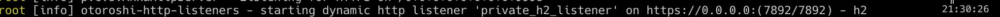

Custom HTTP Listeners
starting from v16.18.0, otoroshi introduce the custom http listeners feature. While this feature can seems to be a little dull, it is actually quite powerful and can unlock a whole new world of capabilities.
Custom HTTP Listeners is the ability to run new HTTP listeners on any port you want, with the protocols and tls settings you want, either statically from the otoroshi config. file or dynamically from specific new entities. Those listeners are capable of routing your traffic like the standard otoroshi listener but they are also capable of scoping the traffic to only certains routes or route plugins that are bound to one or more specific listeners.
HTTP Listener config.
by default, the configuration of an http listener look like the following
{
"enabled": true, // is the listener enabled
"exclusive": false, // the the exclusive listeners section
"tls": true, // is TLS enabled ?
"http1": true, // is HTTP/1.1 enabled
"http2": true, // is H2 enabled
"http3": false, // is H3 enabled
"h2c": false, // is H2C enabled
"port": 7890, // the port on which the listener listens
"exposedPort": 7890, // the exposed port (containers, public cloud, etc ...)
"host": "0.0.0.0", // the host on which the listener listens
"accessLog": false, // is the access log enabled
"clientAuth": "None" // do we want mTLS (values are None, Want, Need) ?
}
all the values here are the default ones.
this config. can be used as is from the otoroshi config. file (see the How does is work section) or embedded in the HttpListener entity (see the How does is work section).
Exclusive listeners
exclusive listener is a special kind of listener (marked with the exclusive flag) that can only handle routes or plugin routes that are bound to it. It can be quite handy to handle traffic for special routes, or privates routes that can be accessible only to certain people. When a listener is not exclusive, all the routes without a bound listener can be served from it.
Static HTTP listeners
you can start an http listener right from the otoroshi config. file. To do so, just add an http listener config. at otoroshi.http-listeners. You can also provide the full HTTP listener json formatted config. array in the OTOROSHI_HTTP_LISTENERS env. variable.

those listeners will start at otoroshi startup, as soon as the admin extensions are started.
static listeners MUST have an id field sor routes and plugins can be bound to it
Dynamic HTTP Listeners
you can also defined dynamic http listeners from otoroshi admin. API or otoroshi admin. backoffice.

the API is available at http://otoroshi-api.oto.tools:8080/apis/http-listeners.extensions.otoroshi.io/v1/http-listeners/:id. As soon as you create a new entity, the corresponding listener will be started. If you modify it, the listener will be restarted. If you delete it the listener will be stopped.
for instance if we want to create an H2 only listener for some private routes on port 7892, then we could do
curl -X POST 'http://otoroshi-api.oto.tools:8080/apis/http-listeners.extensions.otoroshi.io/v1/http-listeners/private_h2_listener' \
-u admin-api-apikey-id:admin-api-apikey-secret \
--data name=private_h2_listener \
--data config.port=7892 \
--data config.exposedPort=7892 \
--data config.exclusive=true \
--data config.http1=false
a few seconds later, a log will be shown in the otoroshi logs like
if we want to stop it, we could do something like
curl -X PATCH 'http://otoroshi-api.oto.tools:8080/apis/http-listeners.extensions.otoroshi.io/v1/http-listeners/private_h2_listener' \
-u admin-api-apikey-id:admin-api-apikey-secret \
--data config.enabled=false
a few seconds later, a log will be shown in the otoroshi logs like

or delete it like
curl -X DELETE 'http://otoroshi-api.oto.tools:8080/apis/http-listeners.extensions.otoroshi.io/v1/http-listeners/private_h2_listener' \
-u admin-api-apikey-id:admin-api-apikey-secret
Bind a route to a specific HTTP Listener
with http listeners, a new property is available on Routes. The property bound_listeners is an array of values corresponding to the http listeners id. As soon as a route is bound to one or more http listeners, it will only be routed on those listeners.
for instance, the following route in only accessible from the http listener with id static-1. The standard http listener will no be able to route it.
{
"_loc": {
"tenant": "default",
"teams": [
"default"
]
},
"id": "route_6ee30dc0a-0871-4ab2-9b37-db939c36c418",
"name": "my api",
"description": "my api",
"tags": [],
"metadata": {
"created_at": "2024-04-24T11:51:41.330+02:00"
},
"enabled": true,
"debug_flow": false,
"export_reporting": false,
"capture": false,
"groups": [
"default"
],
"bound_listeners": ["static-1"],
"frontend": {
"domains": [
"myapi.oto.tools"
],
"strip_path": true,
"exact": false,
"headers": {},
"query": {},
"methods": []
},
"backend": {
"targets": [
{
"id": "mirror.otoroshi.io",
"hostname": "mirror.otoroshi.io",
"port": 443,
"tls": true,
"weight": 1,
"predicate": {
"type": "AlwaysMatch"
},
"protocol": "HTTP/1.1",
"ip_address": null
}
],
"root": "",
"rewrite": false,
"load_balancing": {
"type": "RoundRobin"
}
},
"backend_ref": null,
"plugins": [],
"kind": "Route"
}
Bind a plugin to a specific HTTP Listener
if you need something more subtle, it is also possible to apply plugins only on specific listeners. For instance in the following route, the apikey plugin will only be applied from the static-1 listener
{
"_loc": {
"tenant": "default",
"teams": [
"default"
]
},
"id": "route_6ee30dc0a-0871-4ab2-9b37-db939c36c418",
"name": "my api",
"description": "my api",
"tags": [],
"metadata": {
"created_at": "2024-04-24T11:51:41.330+02:00"
},
"enabled": true,
"debug_flow": false,
"export_reporting": false,
"capture": false,
"groups": [
"default"
],
"bound_listeners": [],
"frontend": {
"domains": [
"myapi.oto.tools"
],
"strip_path": true,
"exact": false,
"headers": {},
"query": {},
"methods": []
},
"backend": {
"targets": [
{
"id": "mirror.otoroshi.io",
"hostname": "mirror.otoroshi.io",
"port": 443,
"tls": true,
"weight": 1,
"predicate": {
"type": "AlwaysMatch"
},
"protocol": "HTTP/1.1",
"ip_address": null
}
],
"root": "",
"rewrite": false,
"load_balancing": {
"type": "RoundRobin"
}
},
"backend_ref": null,
"plugins": [
{
"enabled": true,
"debug": false,
"plugin": "cp:otoroshi.next.plugins.ApikeyCalls",
"include": [],
"exclude": [],
"config": {},
"bound_listeners": ["static-1"],
"plugin_index": {
"validate_access": 0,
"transform_request": 0,
"match_route": 0
}
},
{
"enabled": true,
"debug": false,
"plugin": "cp:otoroshi.next.plugins.OverrideHost",
"include": [],
"exclude": [],
"config": {},
"bound_listeners": [],
"plugin_index": {
"transform_request": 1
}
}
],
"kind": "Route"
}